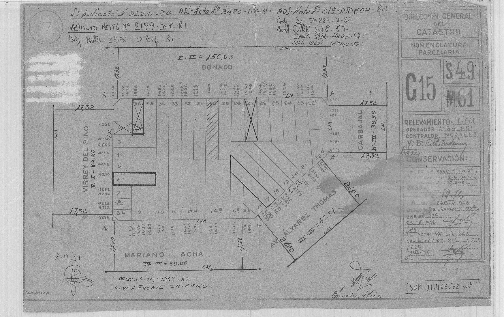

Análisis completo del terreno de 8,66 × 42,50 m con la normativa vigente (Código Urbanístico reformado por la Ley 6776 de 2024 y Código de Edificación), precios reales de la zona, costos de obra actualizados e impuestos. Reemplaza todos los estudios anteriores.
El terreno vale ≈ USD 260.000 (rango 240–280 mil) y el proyecto puede pagar entre 55.000 y 136.000 para ganar un 12 % neto (lo que queda después de pagar todo, incluidos los impuestos).
Comparé más de 20 alternativas (ver "Comparativa"). La opción que mejor resiste son 3 casas en fila de 183 m², cada una con patio y pileta propios. Aun así, con el terreno a 260.000, la venta a 2.500 USD/m², la obra a 1.700 USD/m² con todo incluido e impuestos, da −USD 6.500. Vendiendo a 2.700/m² gana 4,6 %, cuando para que valga el riesgo hace falta un 12 %. Recomendación: no comprar al valor de mercado. La alternativa más rentable hoy es conseguirle un comprador al terreno y cobrar la comisión (USD 15.600–18.200 entre las dos partes, ver "Vender el terreno"). Comprar solo si la LFI (línea de frente interno: el límite que fija la Ciudad para construir hacia el fondo del lote) sale favorable, la tasación (valuación hecha por una inmobiliaria o un perito) confirma ≥ 2.700/m², la obra cotiza ≤ 1.700/m² y el terreno se consigue a ≤ 130.000. Con 4 socios hace falta más margen todavía (ver "Socios").
Es todo lo que cuesta el proyecto, de la compra del terreno a la venta de la última casa. Se recupera con la venta de las 3 casas (USD 1.372.500) y, después de pagar impuestos (≈ 72.700), queda un resultado de ≈ −6.500.
| Concepto | USD | % | Quién lo pone | Cuándo |
|---|---|---|---|---|
| Terreno (valor de mercado) | 260.000 | 19,9 % | El dueño lo aporta, o se compra | Al empezar |
| Gastos de compra del terreno (escribano, sellos) | 10.400 | 0,8 % | Inversor | Al empezar |
| Obra: materiales, mano de obra, arquitecto, dirección e imprevistos | 933.300 | 71,4 % | Inversor | Durante los 13 meses de obra |
| Instalación de gas (3 casas) | 16.500 | 1,3 % | Inversor | Meses 6 a 10 de obra |
| Permisos, demolición, mensura, reglamento de PH (documento que fija qué es de cada dueño y qué es común) | 31.149 | 2,4 % | Inversor | Antes y al final de la obra |
| Comisión de venta de las casas (4 %) | 54.900 | 4,2 % | Se paga con las ventas | Al vender |
| Inversión total | 1.306.249 | 100 % | Plata que pone el inversor: ≈ 991.000 si el dueño aporta el terreno, ≈ 1.251.000 si hay que comprarlo | |
| Dato | Valor | Fuente | Estado |
|---|---|---|---|
| Parcela | SMP (sección, manzana y parcela: el número catastral) 049-061-031, Comuna 15. Puertas Donado 1662 y 1664 | API de Catastro (registro oficial de los terrenos de la Ciudad) del GCBA (Gobierno de la Ciudad de Buenos Aires) | verificado |
| Medidas | 8,66 × 42,50 m = 368 m², rectangular | Croquis de parcela, AGIP (Agencia de Recaudación de la Ciudad) 2008 y perímetro de manzana (coinciden). Ciudad 3D (mapa oficial de la Ciudad con la normativa de cada lote) dice 360,4 m²: error del polígono digital | falta mensura (medición oficial de un agrimensor) |
| Construcción actual | PH de 2 unidades, 163 m², 1 planta. Firman 2 dueños | API Catastro | verificado |
| Demolición | Permitida: Ley 3056 "Desestimado – Nota CAAP" (el Consejo Asesor de Asuntos Patrimoniales revisó la casa y no la protegió), no es APH (Área de Protección Histórica) | Ciudad 3D | verificado |
| Afectaciones | Ninguna (riesgo hídrico, ensanche, apertura, LEP: línea de edificación particularizada) | Ciudad 3D | verificado |
| Orientación | Frente al NE sobre Donado, fondo al SO. Lindero (terreno o muro del vecino) NO y lindero SE | Plano índice 2020 | verificado |
| Lindero SE (Donado 1660) | 428 m² cubiertos sobre 368 m² de lote: construido casi hasta el fondo. Si la Ciudad traza una LFI, podría permitir la compensación de LFI (CU, Código Urbanístico, art. 6.4.2.2 b3) | API Catastro | verificado |
| Lindero NO (Donado 1666) | PH de 2 unidades, 205 m², 1 planta | API Catastro | verificado |
| Lindero de fondo | Mariano Acha 1631–1641, parcela grande | API Catastro | sin superficie |
| LFI | Ciudad 3D no muestra ninguna. El perímetro de manzana de 1981 tiene una nota a mano: "Resolución 1569-82 – Línea Frente Interno", cuyo texto no está online. La manzana tiene 5 lados (Donado, Virrey del Pino, Mariano Acha, Av. Álvarez Thomas, Carbajal), así que la LFI la fija la DGIUR (Dirección General de Interpretación Urbanística de la Ciudad) | Perímetro de manzana, plano índice, CU 6.4.2.1 | pendiente: trámite en TAD (Trámites a Distancia, la web oficial) |

| Producto | USD/m² | Referencia |
|---|---|---|
| PH usados de 3 amb en Villa Ortúzar | 1.600–2.300 | Zonaprop (portal de avisos inmobiliarios): 19 avisos, 16/10/2026 (m² totales) |
| PH a estrenar, 4 amb, 110 m² cub. (Holmberg 1659, a una cuadra) | 2.500 cub. | El único comparable (propiedad parecida que sirve para comparar precios) directo: USD 275.000 con cochera |
| Pozo en Villa Ortúzar (mediana de 22 avisos) | 2.346 | Investigación externa, oct. 2026 |
| Casas nuevas grandes (140–230 m²), Villa Urquiza y Chacarita | 1.900–2.400 | Zonaprop, 32 avisos a estrenar |
| Casas y PH premium en Colegiales y Belgrano | 2.400–3.500 | Céspedes 3000, Jorge Newbery 3300, Conde 1468 |
| Cierre real de usados en CABA (agosto 2026) | 2.150 | Colegio de Escribanos; brecha oferta/cierre −4,8 % |
| Precio realista para estas casas nuevas con pileta | 2.400–2.600 | Base del informe: 2.500. Hace falta una tasación para confirmarlo |
| Método | Valor USD | Cómo se calcula |
|---|---|---|
| Lotes publicados en la zona, ajustados | ≈ 376.000 | Mediana de 8 lotes: 1.775/m². Ajustes: negociación ×0,88, tamaño ×0,90, forma larga y angosta ×0,90, LFI sin definir ×0,85, 2 dueños ×0,95 → 1.021/m² × 368 m². Es lo que piden otros, no lo que se paga |
| Uso actual: 2 PH viejos (163 m²) | 196.000–245.000 | 163 m² × 1.200–1.500/m² (PH usados a reciclar en la zona). Es el piso: los dueños pueden vender así sin demoler |
| Lo que paga un edificio (desarrollador profesional) | ≈ 115.000 | Residual con obra a 1.500/m², venta a 2.550/m² y LFI favorable. Va de −200.000 a 431.000 según costo y precio |
| Lo que pagan las 3 casas de este proyecto | 55.000–136.000 | Residual para ganar 12 % neto, con venta a 2.500–2.700/m² y obra a 1.700/m² |
| Valor de mercado estimado | ≈ 240.000–280.000 | Valor central ≈ 260.000: un poco más de lo que sacarían vendiéndolo como 2 PH usados y bastante menos de lo que se pide por lotes parecidos. Para demoler y construir, con los costos actuales, nadie puede pagar mucho más |
Con el terreno a 260.000, el proyecto de 3 casas da −6.500 netos a 2.500/m² y +60.000 (4,6 %) a 2.700/m². A 220.000 da +22.000 (1,7 %) y +86.000 (6,8 %). Ningún caso llega al 12 % que haría atractivo el negocio. El terreno vale más de lo que este proyecto puede pagar.
| Regla | Artículo | Efecto en el lote |
|---|---|---|
| USAB 2 (Unidad de Sustentabilidad de Altura Baja 2, la zona del lote): plano límite (altura máxima) de 14,60 m; lo edificable lo limita la LFI | CU 6.2.5 | Hasta PB + 4 pisos (5 × 2,88 = 14,40 m) |
| Manzana de 5 lados: la LFI la fija la DGIUR. Si queda exenta, hay que dejar 4 m libres al fondo | CU 6.4.2.1 · 6.4.2.4 | Supuesto del proyecto: edificable hasta 38,50 m. Pendiente del trámite en TAD |
| Living (local de 1ª clase, donde se pasa el día): a espacio urbano (aire libre amplio: la calle, el fondo libre o un patio grande). Dentro del lote: lado ≥ 4 m y altura/distancia ≤ 1,5 | CE (Código de Edificación) 3.3.2.3 · CU 6.4.4.2 f | Con 3 plantas (9,04 m): patio de ≥ 6,03 m entre casas |
| Dormitorios (locales de 3ª clase): patio vertical (patio interno de al menos 20 m² y 4 m de lado) y ventana a ≥ 5 m del muro de enfrente | CE 3.8.9.1 | Fondo libre de ≥ 5 m |
| Pasillo: 1,10 m (lote ≤ 8,66 m, 31–50 personas), con ensanches de Ø 1,50 en los extremos y cada 20 m | CE 3.4.7.3 | Las entradas de las casas, retiradas 0,40 m, hacen de ensanche |
| Escalera interna: alzada ≤ 0,18, pedada ≥ 0,26, ancho 0,90, descanso 0,95 | CE 3.4.6.1 | Piso a piso 2,88 = 16 × 0,18 |
| Plusvalía (cargo de la Ciudad por construir más de lo que permitía el código anterior): solo por encima de ≈ 720 m² | Código Fiscal | 549 m² → USD 0 |
| Compensación de LFI en USAB: se puede pasar la LFI hasta 4 m de ancho si los linderos construyeron más allá | CU 6.4.2.2 b3 | Posible a favor: el lindero SE está construido hasta el fondo |
| Patio vertical en USAB 2: 20 m², lado 4 m. En patios y espacio urbano solo elementos plegables | CU 6.4.4.4.1 · 6.4.4.1 | Nada de pérgolas fijas sobre los patios |
| Regla de 40 m, ascensor futuro y cocheras | CE 3.4.7.5 · 3.8.9.1 · 3.14.8.1 | No aplican |
Por qué no sirven los proyectos anteriores: los 6 PH con patio lateral de 2 m no cumplen. Hacen falta 5 m hasta el muro de enfrente para los dormitorios y patios de 4 a 6 m para el living. En un lote de 8,66 m, un patio lateral así deja una casa de 2,11 m de ancho. La única forma que cumple son casas en fila de lado a lado, con patio entre casas.
Mismas reglas para todas las opciones: terreno a 260.000, obra a 1.700/m² todo incluido (1.800 en una planta, 1.750 en cuatro), gas natural sin aire acondicionado, impuestos de venta habitual y precio de venta según el tamaño de cada casa, porque las casas grandes se venden a menos por m² (2.500 hasta 110 m², 2.450 hasta 150 m², 2.400 por encima).
| Opción | ¿Cumple la norma? | m² vendibles | Precio por casa | Capital | Neto | Venta | Veredicto |
|---|---|---|---|---|---|---|---|
| 3 casas de 3 plantas (183 m²) | Sí | 549 | 439–457 mil | 1,31 M | −52k a 2.400 · −6k a 2.500 | Producto único en Villa Ortúzar; ticket alto | Elegida: la mejor relación entre superficie y producto |
| 3 casas de 4 plantas (207 m²) | Sí | 620 | 496 mil | 1,46 M | −51k | Difícil: 4 pisos por escalera sin ascensor y ticket de casi 500 mil | Empata en plata, pero es peor producto y necesita más capital (plata que pone el inversor) |
| 4 casas de 3 plantas (104 m²) | Sí | 417 | 261 mil | 1,07 M | −79k | La más fácil de vender | Los 3 patios de 6 m entre casas se comen 18 m del lote |
| 3 casas de 2 plantas (132 m²) | Sí | 395 | 323 mil | 1,03 M | −101k | Buena | Se desperdicia altura: el terreno pesa más por m² |
| 4 casas de 2 plantas (80 m²) | Sí | 322 | 201 mil | 0,90 M | −127k | Buena | Idem, y 4 cocinas y baños para pocos m² |
| 3 casas de 1 planta (66 m²) | Sí | 197 | 165 mil | 0,69 M | −210k | Buena | Una planta no es más barata por m²: misma platea (base de hormigón sobre la que apoya la casa) y mismo techo para un tercio de superficie |
| 4 casas de 1 planta (40 m²) | Sí | 161 | 101 mil | 0,62 M | −235k | Monoambientes | La peor: los patios ocupan casi todo el lote |
| 6 PH con patio lateral de 2 m | No | 590 | 246 mil | — | — | — | No se aprueba: dormitorios a 2,15 m del muro (piden 5 m) y living sin espacio urbano |
| Edificio PB + 4 con ascensor | Sí | ≈ 1.400 | — | 2,4–3,0 M | Paga ≈ 115k por el terreno | Compite con todo el pozo (unidades que se venden antes de construirse) de la zona (2.346/m²) | Paga el terreno solo con obra a 1.400 y venta ≥ 2.700. Triple de capital y 24–30 meses |
| Comprar, reciclar los 2 PH y vender | Sí | 163 | 175 mil | 0,42 M | −83k | Buena | Reciclar a ~800/m² y vender a 2.150/m² no recupera el terreno |
| Intermediar la venta del terreno a otro comprador | — | — | — | 0 | +7.800 a +18.200 | Un desarrollador o un comprador final | Gana plata sin poner capital ni correr riesgo (ver "Vender el terreno") |
| No comprar este terreno | — | — | — | 0 | 0 | — | Hoy, la decisión más rentable. Seguir solo si se cumplen las condiciones de "Pendientes" |
La norma fija el ancho del patio entre casas según la altura (altura/distancia ≤ 1,5, y nunca menos de 5 m para los dormitorios). Probé todas las combinaciones de cantidad de casas y de plantas que entran en los 42,50 m. Resultado neto en miles de USD, con terreno a 260.000:
| Plantas · patio entre casas | 2 casas | 3 casas | 4 casas | 5 casas |
|---|---|---|---|---|
| 1 planta · 5,05 m | 234 m² · −197 | 197 m² · −210 | 161 m² · −235 | no entra |
| 2 plantas · 5,05 m | 468 m² · −82* | 395 m² · −101 | 322 m² · −127 | no entra |
| 3 plantas · 6,05 m | 681 m² · +6* | 549 m² · −52 (−6 a 2.500) | 417 m² · −79 | no entra |
| 4 plantas · 7,97 m | 852 m² · +30* | 620 m² · −51 | no entra | no entra |
* Las opciones de 2 casas son casas de 234 a 426 m². Las de 3 y 4 plantas dan positivo solo en el papel: serían casas de 340 a 426 m² (USD 800.000 a 1.000.000) en Villa Ortúzar, donde no hay compradores para ese ticket. Con un precio realista para ese tamaño (≈ 2.000/m²) pierden más de 200.000.
| Otras ideas que también probé | m² vendibles | Neto | Por qué no |
|---|---|---|---|
| 3 casas con alturas alternadas (3, 2 y 3 plantas): patios de 5,07 m | 526 | −40k | Patios más angostos, pero se pierde una planta entera: queda igual o peor que 3 casas de 3 plantas |
| 4 casas con alturas alternadas (3, 2, 3 y 2 plantas) | 401 | −87k | Idem, con una cocina y dos baños más |
| Unidades apiladas PB + 1 (6 departamentos en 3 bloques, sin ascensor) | 371 | −97k | La escalera común se come superficie y los departamentos se venden peor que las casas |
| Unidades apiladas PB + 2 (9 departamentos, con ascensor) | 495 | −154k | El ascensor y la escalera común en bloques chicos no se pagan |
| Construir las 3 casas y alquilarlas | 549 | 4–5 % bruto anual | El costo total (≈ 2.290/m² con el terreno) es casi lo mismo que vale en el mercado: no se crea valor, y el alquiler rinde menos que un fideicomiso (inversión administrada por un tercero) en dólares |
Si en vez de hacer el proyecto se le consigue un comprador al terreno, se cobra la comisión de la venta. En CABA lo habitual es 3 % + IVA (impuesto al valor agregado) a cada parte (a veces hasta 4 % al comprador), y solo la puede cobrar un corredor inmobiliario matriculado en el CUCICBA (Colegio Único de Corredores Inmobiliarios de la Ciudad).
| Precio de venta del terreno | 3 % del vendedor | 3–4 % del comprador | Comisión total |
|---|---|---|---|
| 240.000 | 7.200 | 7.200–9.600 | 14.400–16.800 |
| 260.000 (valor estimado) | 7.800 | 7.800–10.400 | 15.600–18.200 |
| 280.000 | 8.400 | 8.400–11.200 | 16.800–19.600 |
Más IVA, que se suma al precio de la comisión. Si se cobra solo a una de las partes, es la mitad.
Cada casa ocupa el ancho del lote (menos el pasillo), tiene ventanas al frente y al fondo (ventilación cruzada) y un patio propio de 6,05 × 7,11 m detrás. La casa 1 da a la calle; la 3 tiene además el fondo libre y la franja final del pasillo. Programa: PB social (living adelante, al NE, para tener sol de invierno; cocina-comedor al patio), 1º suite (dormitorio principal, vestidor, escritorio y baño), 2º chicos (2 dormitorios, playroom (sala de juegos) y baño). La estructura es de hormigón armado (hormigón con hierro adentro) con losas (pisos y techos de hormigón) de viguetas pretensadas (vigas de hormigón prefabricadas para armar las losas) y cerramientos (paredes exteriores) de ladrillo hueco.
| Planta | Local | Medidas (m) | m² |
|---|---|---|---|
| PB | Living (al frente, NE) | 7,11 × 3,00 | 21,3 |
| PB | Cocina-comedor (al patio, SO) | 7,11 × 3,00 | 21,3 |
| PB | Toilette y lavadero | 2,71 × 1,80 | 4,9 |
| 1º | Dormitorio principal | 7,11 × 3,00 | 21,3 |
| 1º | Escritorio · Vestidor | 3,50 × 3,00 · 3,51 × 3,00 | 10,5 · 10,5 |
| 1º | Baño | 2,71 × 1,80 | 4,9 |
| 2º | Dormitorio 2 · Dormitorio 3 | 3,50 × 3,00 · 3,51 × 3,00 | 10,5 · 10,5 |
| 2º | Playroom o dormitorio 4 | 7,11 × 3,00 | 21,3 |
| 2º | Baño | 2,71 × 1,80 | 4,9 |
| — | Patio con pileta (descubierto) | 7,11 × 6,05 | 43,0 |
| Cubierto por casa (7,26 × 8,40 × 3) | 61,0 × 3 | 183,0 | |
| Cubierto total, 3 casas | 3 × 183,0 | 549,0 | |
| Casa del medio (la peor ubicada) | Verano (21/12) | Otoño y primavera | Invierno (21/6) |
|---|---|---|---|
| Patio propio (a 1 m del piso) | 5,7 h | 3,7 h | 1,3 h |
| Living al frente (PB, mira al NE) | 6,8 h | 4,2 h | 3,8 h |
| Cocina-comedor al patio (PB, mira al SO) | 4,7 h | 2,0 h | 0 h |
| Dormitorio principal al patio (1º, SO) | 4,7 h | 4,2 h | 1,7 h |
| Playroom al patio (2º, SO) | 5,2 h | 4,2 h | 1,7 h |
| Escritorio y dormitorios al frente (1º y 2º, NE) | 7,8 h | 7,5 h | 5,0 h |
Simulación hora por hora para Buenos Aires (latitud 34,6° S) con las 3 casas de 9,04 m, los muros y vecinos de una planta (3 m) a los costados y al fondo. La casa 1 (que da a la calle) y la casa 3 (con el fondo libre) tienen más sol que la del medio.
Lectura honesta: en verano todo tiene sol (de 4,7 a 7,8 horas). En invierno el patio tiene poco más de una hora de sol y la fachada que da al patio queda en sombra en planta baja, porque la casa siguiente la tapa. Por eso el living va al frente (NE): recibe 3,8 horas de sol en invierno y 6,8 en verano, y la cocina-comedor, que se usa menos horas de día, queda hacia el patio. Es la contracara del lote orientado NE–SO con casas en fila.
| Escenario base (gas sin aire acondicionado) | USD |
|---|---|
| Venta: 549 m² × 2.500 | 1.372.500 |
| − Terreno a valor de mercado (260.000) + 4 % de gastos de compra | −270.400 |
| − Obra: 549 m² × 1.700 todo incluido | −933.300 |
| − Gas: red, calefactores, termotanque y cocina (3 × 5.500) | −16.500 |
| − Demolición, permisos, derechos, mensura, PH | −31.149 |
| − Comercialización 4 % | −54.900 |
| Resultado antes de impuestos | 66.251 |
| − Ingresos Brutos (impuesto de la Ciudad sobre las ventas) 3 % | −41.175 |
| − IVA neto (10,5 % sobre la obra, con crédito de materiales) | −31.534 |
| Resultado neto | −6.458 |
| Versión 100 % eléctrica con aire (6.900 por casa) | −10.330 |
| Obra USD/m² | Venta 2.300 | 2.500 | 2.700 | 2.900 | 3.100 |
|---|---|---|---|---|---|
| 1.600 | −3,8 % | 2,5 % | 7,6 % | 12,6 % | 17,7 % |
| 1.700 | −7,5 % | −0,5 % | 4,6 % | 9,4 % | 14,2 % |
| 1.800 | −11,0 % | −4,2 % | 1,8 % | 6,5 % | 11,1 % |
| 2.000 | −17,0 % | −10,8 % | −4,5 % | 1,2 % | 5,5 % |
Resultado neto sobre el costo total, con terreno a 260.000. En verde, los casos que superan el 12 %.
| Obra USD/m² | Venta 2.300 | 2.500 | 2.700 | 2.900 | 3.100 |
|---|---|---|---|---|---|
| 1.600 | 27.000 | 108.000 | 189.000 | 270.000 | 351.000 |
| 1.700 | no paga | 55.000 | 136.000 | 217.000 | 298.000 |
| 1.800 | no paga | 1.000 | 82.000 | 163.000 | 244.000 |
| 2.000 | no paga | no paga | no paga | 56.000 | 137.000 |
Precio máximo del terreno para ganar un 12 % neto sobre el costo después de impuestos. "No paga": no llega al 12 % ni con el terreno regalado.
El negocio depende casi todo del precio de venta: cada USD 100/m² mueve unos USD 40.000 netos. El precio de equilibrio (precio de venta en el que no se gana ni se pierde) con terreno a 260.000 es de ≈ 2.405/m² con obra a 1.600, ≈ 2.515 con obra a 1.700 y ≈ 2.625 con obra a 1.800. Ganancias (25–35 %) solo se paga si hay resultado positivo. Supuesto de impuestos: venta de las 3 casas por los socios como actividad habitual.
La obra se presupuesta a 1.700 USD/m² con todo incluido (549 m² × 1.700 = 933.300). Ese número junta cinco cosas: materiales, mano de obra de los gremios (cuadrillas de cada oficio: albañiles, plomeros, electricistas), honorarios de los profesionales e imprevistos. El terreno, los impuestos y la comisión de venta van aparte (ver "Números").
| Rubro | Quién lo cobra | 3 casas | Por casa | USD/m² | % de la obra |
|---|---|---|---|---|---|
| Materiales | Corralones (comercios de materiales de construcción), hormigonera, carpinterías, sanitarios | 450.276 | 150.092 | 820 | 48,2 % |
| Mano de obra | Gremios por contrato cerrado (detalle abajo) | 368.408 | 122.803 | 671 | 39,5 % |
| Arquitecto: proyecto, planos y permisos | Arquitecto matriculado (firma ante la Ciudad) | 32.747 | 10.916 | 60 | 3,5 % |
| Dirección de obra | Maestro mayor de obras (coordina gremios, compras y calidad) | 32.747 | 10.916 | 60 | 3,5 % |
| Cálculo estructural | Ingeniero calculista (ingeniero que calcula la estructura) | 8.187 | 2.729 | 15 | 0,9 % |
| Imprevistos | Reserva (5 % del costo directo) | 40.934 | 13.645 | 75 | 4,4 % |
| Obra | 933.300 | 311.100 | 1.700 | 100 % |
| Otros profesionales y trámites | USD |
|---|---|
| Derechos de construcción GCBA (549 m² × ≈ 11,2) | 6.149 |
| Demolición de 163 m² y retiro de escombros | 6.000 |
| Permiso de demolición | 500 |
| Agrimensor: mensura y plano de PH (plano que divide el terreno en unidades independientes), más tasas de Catastro | 2.000 |
| Escribano: reglamento de PH | 7.300 |
| Gestoría, final de obra (aprobación de la Ciudad cuando se termina la obra) y otros trámites | 9.200 |
| Total (línea "permisos, demolición, mensura" de Números) | 31.149 |
¿Vendiendo las 3 casas se cubre todo? Casi justo. A 2.500/m² las ventas suman USD 1.372.500: pagan la obra, los trámites y la comercialización (≈ 1.036.000) y quedan ≈ 337.000. Con eso se paga el terreno con sus gastos de compra (270.000) y los impuestos (≈ 73.000), y no sobra nada: el resultado es ≈ −6.500. Se recupera todo lo invertido, pero no hay ganancia para repartir.
| Socio | Pone | Cobra, en este orden |
|---|---|---|
| Dueño del terreno (hoy son 2 titulares) | El terreno, valuado en 260.000. No cobra al principio: lo aporta | 1º el valor del terreno (260.000) y 2º un premio del 15 % (39.000) por esperar unos 2 años, de las primeras ventas |
| Inversor | Toda la plata de la obra: ≈ USD 1.000.000 en aportes mensuales | 1º su capital. 2º un retorno preferente (se cobra antes que el resto de la ganancia) del 10 % anual (≈ 94.000). 3º la mitad de lo que sobre |
| Francisco + socio (50 % y 50 %) | Proyecto, permisos, dirección y gestión de obra, venta | La otra mitad de lo que sobre después del terreno, el capital y los preferentes |
| Venta USD/m² | Resultado neto | Dueño del terreno | Inversor gana | Francisco | Socio |
|---|---|---|---|---|---|
| 2.500 (base) | −6.500 | 260.000 | −6.500 (−1 %) | 0 | 0 |
| 2.700 | 60.000 | 299.000 | 21.000 (2 %) | 0 | 0 |
| 2.900 | 124.000 | 299.000 | 85.000 (9 %) | 0 | 0 |
| 3.100 | 188.000 | 299.000 | 122.000 (12 %) | 14.000 | 14.000 |
| 3.300 | 252.000 | 299.000 | 154.000 (15 %) | 30.000 | 30.000 |
Obra a 1.700/m², gas sin aire acondicionado, impuestos de venta habitual. El porcentaje del inversor es sobre su capital, por los ≈ 2 años que dura. Con obra a 1.600/m², cada fila mejora unos 35.000.
¿Es tentador? Para el dueño del terreno sí: cobra su valor de mercado más un 15 %, sin inmobiliaria. Para el inversor y para ustedes dos, no. Con precios de la zona (2.500–2.700/m²) el inversor gana entre 0 y 2 % en dos años, cuando un fideicomiso en dólares paga 12–16 % al año, y a ustedes no les queda nada. Para que los cuatro ganen bien hace falta vender a más de 3.100/m², que hoy en Villa Ortúzar no está probado, o que el dueño acepte cobrar el terreno a ≈ 150.000.
En el esquema propuesto, no: el dueño cobra en efectivo (260.000 + 15 %) con las primeras ventas, y hay que vender las 3 casas para devolverle al inversor la plata de la obra. Darle una casa por el terreno sale caro, porque la casa vale más que el terreno:
| Si el dueño recibe 1 casa por el terreno | USD |
|---|---|
| Valor de la casa que recibe (183 m² × 2.500) | 457.500 |
| Valor del terreno que entrega | 260.000 |
| Le estaríamos regalando | 197.500 |
| Venta de las otras 2 casas | 915.000 |
| Costo de construir las 3 casas, trámites y comisión | −1.017.549 |
| Resultado después de impuestos (aprox.) | −167.000 |
Solo cierra si el dueño que recibe la casa pone la diferencia (≈ 197.500 en efectivo), y en ese caso es lo mismo que venderle la casa. Con 2 dueños, una variante posible es que uno cobre en efectivo y el otro compre una casa a precio de costo descontando su parte del terreno.
| Por casa (183 m², 4–5 ambientes, patio y pileta) | Pesos por mes | USD por mes | USD por año | Renta bruta sobre el costo |
|---|---|---|---|---|
| Bajo | 1.800.000 | 1.165 | 14.000 | 3,4 % |
| Medio | 2.200.000 | 1.424 | 17.100 | 4,1 % |
| Alto | 2.500.000 | 1.618 | 19.400 | 4,7 % |
Referencias: PH de 4 ambientes con patio en Villa Urquiza publicados a $1.200.000–1.700.000 por mes en 2026 (casas más chicas y usadas); las nuevas con pileta van al tramo alto. Rentabilidad promedio de CABA: 5,8 % bruta (antes de descontar gastos) anual (Zonaprop, julio 2026); en los barrios caros, 3,4–4,8 %. Costo por casa: ≈ 417.000 (terreno, obra, gas y trámites). Dólar a $1.545.
Alquilar no conviene como negocio: las 3 casas rendirían unos USD 42.000–58.000 por año en bruto (≈ 3,3 % neto, que es lo que queda después de pagar el impuesto municipal ABL, los meses sin inquilino y el mantenimiento), contra 12–16 % anual de un fideicomiso en dólares. Sirve solo si alguno de los socios quiere quedarse con una casa como inversión de largo plazo.
| Por casa | Con gas (elegida) | 100 % eléctrica |
|---|---|---|
| Instalación sin aire acondicionado | 5.500 | — |
| Instalación con aire para verano | 9.100 | 6.900 |
| Qué lleva | Red, medidor y conexión Metrogas (la empresa de gas); 5 calefactores de tiro balanceado; termotanque; cocina; 4 splits (aires acondicionados de pared) para verano | 5 splits inverter frío/calor; termotanque con bomba de calor (equipo eléctrico que calienta el agua gastando poca luz) de 200 L; anafe de inducción (anafe eléctrico que calienta la olla con un campo magnético) y horno; tablero reforzado |
| Factura anual estimada | USD 1.020 | USD 977 |
| Factura de julio | $193.000 | $218.000 |
| Factura de enero | $102.000 | $79.000 |
Cómputo preliminar (±20 %) a partir de las medidas del proyecto. Lo ajustan el ingeniero calculista y el maestro mayor de obras.
| Material | Por casa | 3 casas | Se usa en | Se compra en el mes de obra |
|---|---|---|---|---|
| Hormigón H21, de resistencia estándar (bases, vigas, columnas, losas, escalera, pileta) | 41 m³ | 124 m³ | Estructura | 1 a 7 |
| Hierro (acero ADN 420, el de construcción estándar) | 3,2 t | 9,7 t | Fundaciones, columnas, vigas, losas | 1 a 7 |
| Viguetas pretensadas de 7,40 m | 51 | 153 | Entrepisos y techo | 2, 4 y 6 |
| Bloques cerámicos para losa | 1.464 | 4.392 | Entrepisos y techo | 2, 4 y 6 |
| Malla de acero 15 × 15 Ø 4,2 | 201 m² | 603 m² | Capa de compresión | 2, 4 y 6 |
| Ladrillo hueco 18 × 18 × 33 (fachadas y medianeras, las paredes compartidas con el vecino) | 3.770 | 11.300 | Cerramientos | 3 a 8 |
| Ladrillo hueco 12 × 18 × 33 (tabiques) | 2.290 | 6.870 | Divisiones interiores | 4 a 9 |
| Cemento (bolsas de 50 kg) | 426 | 1.280 | Hormigón, morteros, contrapisos | 1 a 10 |
| Arena · piedra partida | 62 m³ · 31 m³ | 186 m³ · 93 m³ | Hormigón y morteros | 1 a 10 |
| Carpinterías de aluminio negro con DVH (doble vidrio hermético) | ≈ 35 m² | ≈ 105 m² | Ventanas y ventanales | Pedir en el 5 (demoran 6–8 semanas), colocar en el 9 |
| Caños de agua, desagüe y eléctricos | 1 núcleo apilado | — | Instalaciones | 6 a 9 |
| Yeso proyectado (terminación lisa de las paredes interiores) · revoque exterior | 728 m² · 99 m² | 2.184 m² · 297 m² | Terminaciones | 9 a 11 |
| Microcemento (revestimiento continuo de cemento fino para pisos y paredes) | 201 m² | 603 m² | Pisos y baños | 11 a 12 |
| Sanitarios (inodoro, lavatorio, ducha) | 2 baños + toilette | 6 + 3 | Baños | 10 a 12 |
| Pileta: venecita (azulejos chicos de pileta) | ≈ 30 m² | ≈ 90 m² | Patios | 10 a 12 |
| Etapa | Cuándo | Qué pasa |
|---|---|---|
| 0 · Antes de comprar | Ya, hasta 12 meses | Fijación de LFI en TAD, tasación, cotización de obra, mensura |
| 1 · Compra y proyecto | Meses 0 a 6 | Escritura (título de propiedad firmado ante escribano), proyecto ejecutivo, cálculo estructural, registro de planos y permiso de demolición |
| 2 · Demolición y fundaciones | Meses 6 a 8 | Demolición de 163 m², bases y vigas de fundación de las 3 casas (meses 1–2 de obra) |
| 3 · Estructura | Meses 8 a 13 | Una losa cada ~6 semanas, cerramientos detrás (meses 2–7 de obra) |
| 4 · Instalaciones y carpinterías | Meses 12 a 16 | Núcleo apilado, carpinterías, revoques (meses 6–10 de obra) |
| 5 · Terminaciones y piletas | Meses 16 a 19 | Microcemento, sanitarios, cocina, pileta, pasillo (meses 10–13 de obra) |
| 6 · Final de obra, PH y ventas | Meses 19 a 26 | Final de obra y plano de PH (60–120 días cada uno), escrituras. Ventas desde el mes 12, en pozo o en construcción |
| Término | Qué significa |
|---|---|
| Por administración | Obra sin constructora: se contrata cada gremio por separado y un maestro mayor de obras coordina |
| Maestro mayor de obras | Técnico que dirige la obra y coordina a los gremios |
| Corredor matriculado | Inmobiliario con matrícula del CUCICBA: el único que puede cobrar comisión en CABA |
| Neto · bruto | Neto: lo que queda después de pagar todo. Bruto: antes de descontar gastos o impuestos |
| Capital | La plata que pone el inversor para hacer la obra |
| Precio de equilibrio | Precio de venta en el que el proyecto no gana ni pierde |
| LFI | Línea de frente interno. Línea que fija la Ciudad para cada manzana: hasta ahí se puede construir desde la calle hacia el fondo. Detrás queda el pulmón de manzana |
| LIB | Línea interna de basamento. Límite del centro de la manzana, que tiene que quedar verde y absorbente |
| DGIUR | Dirección General de Interpretación Urbanística. El organismo de la Ciudad que fija la LFI en manzanas irregulares |
| TAD | Trámites a Distancia. La web oficial donde se inicia la fijación de LFI (pide la cuenta miBA de nivel 3) |
| USAB 2 | Unidad de Sustentabilidad de Altura Baja 2. La zona del Código Urbanístico donde está el lote: altura máxima de 14,60 m |
| CU · CE | Código Urbanístico (qué y cuánto se puede construir) y Código de Edificación (cómo se construye: patios, escaleras, ventilación) |
| Espacio urbano | Espacio abierto donde pueden dar las ventanas del living: la calle, el fondo libre o un patio con lado de al menos 4 m y ancho de al menos 2/3 de la altura de la casa |
| Patio vertical | Patio interno más chico (20 m² y 4 m de lado en USAB 2). Sirve para ventilar dormitorios si la ventana queda a 5 m o más del muro de enfrente |
| h/d | Altura de la casa dividida por el ancho del patio. La norma pide que no pase de 1,5 |
| PH | Propiedad horizontal. Acá, cada casa con su patio es una unidad independiente dentro del mismo terreno |
| PB | Planta baja |
| SMP | Sección, manzana y parcela: el número con el que Catastro identifica el lote |
| Mensura | Medición oficial del terreno hecha por un agrimensor |
| Plusvalía | Cargo que cobra la Ciudad cuando se construye más de lo que permitía el código anterior. Acá es USD 0 |
| Pozo | Venta de unidades antes de construirlas, generalmente más baratas |
| Valor residual | Lo máximo que se puede pagar por el terreno para que el negocio deje la ganancia buscada |
| Preferente | Retorno que cobra el inversor antes de que se reparta el resto de la ganancia |
| Fideicomiso | Contrato en el que un tercero (fiduciario) administra el terreno y la plata de los socios para hacer la obra |
| Condición suspensiva | La compra queda firmada pero solo se concreta si se cumple la condición (por ejemplo, una LFI favorable) |
| Ingresos Brutos · IVA · Ganancias | Impuestos que se pagan al vender las casas como actividad habitual: ≈ 3 % de las ventas, 10,5 % sobre la parte de obra y 25–35 % de la ganancia |
| TB · TT | Calefactor de tiro balanceado (toma y expulsa el aire por la fachada, sin consumir el aire del ambiente) y termotanque a gas |
| DVH | Doble vidrio hermético: aísla del frío y del ruido |
| Edesur · Metrogas | Las empresas de luz y de gas de la zona |
| Supuesto | Valor usado | De dónde sale | Confianza |
|---|---|---|---|
| Normativa | CU con Ley 6776 y CE vigente | Texto literal: CU actualizado por la SECDU (Secretaría de Desarrollo Urbano) al 31/12/2024 (publicado por el CPAU, Consejo Profesional de Arquitectura y Urbanismo) y CE Leyes 6100 + 6438 (CPAU), leídos artículo por artículo | alta |
| Medidas del lote | 8,66 × 42,50 | 3 fuentes catastrales coinciden | alta (falta mensura) |
| LFI | Exenta: edificable hasta 38,50 m | Ciudad 3D no la marca, pero existe la nota de 1982 sin texto online | baja (trámite) |
| Precio de venta | 2.500/m² (rango 2.300–2.700) | Holmberg 1659 (único comparable directo), 32 casas nuevas, pozo de la zona, brecha oferta/cierre −4,8 % | media (falta tasación) |
| Costo de obra | 1.700/m² todo incluido | Apymeco (cámara de pequeñas y medianas constructoras), sep. 2026 (1.594 + IVA + 15–25 % de honorarios y tasas), ICC CABA (índice oficial del costo de la construcción), desarrolladores (≈ 1.500 en edificios), con ahorro por administración | media (falta cotización) |
| Impuestos | Ingresos Brutos 3 %, IVA 10,5 % sobre la obra (neto), Ganancias 30 % | Ley Impositiva CABA 2026, Ley de IVA, Ley 27.802 (la exención no aplica a la venta habitual) | media (falta contador) |
| Valor del terreno | ≈ 260.000 | 8 lotes publicados, valor de uso actual de los 2 PH, valor residual (lo máximo que se puede pagar por el terreno para que el negocio cierre) de un edificio y de este proyecto | media |
| Tarifas de luz y gas | $202/kWh y $392/m³ con impuestos | Cuadros tarifarios de Edesur y Metrogas, octubre 2026, sin subsidio | alta |
| Materiales | Cómputo ±20 % | Medidas del proyecto y rendimientos estándar por m² | media |
Estimaciones de anteproyecto: no son presupuestos ni asesoramiento impositivo o legal. Actualizado el 17/10/2026.